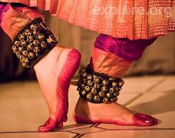

Forbes has a couple of things to say that I feel,
amongst other sources, can be food for thought.
"There is no exercise better for the heart than reaching down and lifting people up."
-- John Holmes
"Thinking is difficult, that's why most people judge."
-- Carl Jung
"Adopt the pace of Nature: Her secret is patience."
-- Ralph Waldo Emerson
"The Devil whispered in my ear, 'You are not strong enough to withstand the storm.'
Today I whispered in the Devil's ear, 'I am the storm'."
-- Word Porn
"So, if you are too tired to speak, sit next to me, because I, too, am fluent in silence." -- R. Arnold
"20 years ago she taught me how to write in a paper. Today, I taught her how to touch on the screen." --InnerVoice
"Every master was once a beginner." --Unknown
Bharatnatyam is a major genre of Indian classical dance that originated in the Hindu temples of Tamil Nadu and neighboring regions. Traditionally,Bharatanatyam has been a solo dance that was performed exclusively by women, and expressed Hindu religious themes and spiritual ideas, particularly of Shaivism, but also of Vaishnavism and Shaktism.
The name Bharatanatyam is a simple derivation from the four most important aspects of dance (in Sanskrit). These are: Bha from Bhava meaning emotion, Ra from Raaga meaning music or melody, Ta from Taala meaning rhythm and Natyam meaning dance.
What particularly interests me about dance is the research studies proving that dance and music therapy can help patients with cancer, Alzheimer's disease, and multiple other chronic ailments.
Having learnt a little Bharatnatyam myself, the experience is liberating, one that can only be felt.
